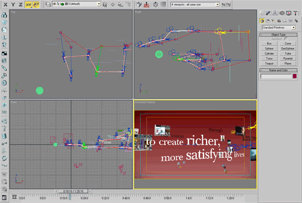
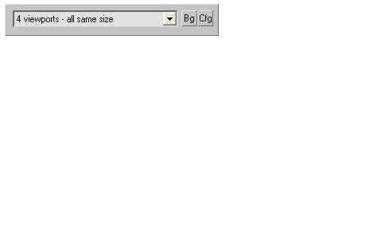

Description
Adds a toolbar that allows you to swap between viewport layouts on the fly, remembering settings per viewport between layouts (and optionally, sessions).

Example uses:
- use one layout for setup or modelling, and another for animation
- Store camera views in each layout
- Wireframe / shaded layouts
UI

Rollover ui to see the options...
Features
- Change viewport layout on the fly
- Remembers individual viewport settings across layouts
- Save layout sets, eg per task (modelling, animation), per scene, or per project
Stores and retrieves - per view
- View type / named camera
- Perspective view's viewpoint
- Shading mode
- Safe frame
- Grid state
- Bg image
- Bg display
- Active viewport
Options
- Quick background image on / off
- Reset layout / all layouts
- Save / load settings to file
- Auto-dock to top or bottom
- Auto-start with max
- Clear settings on startup
Download & Installation
Download Viewport Layout Manager 1.2.ms
Run the .ms file once and it will install Views-ViewportLayoutManager.mcr to the 3dsmax/UI/MacroScripts directory, and install the new toolbar automatically.
Bugs and Feedback
Email me here